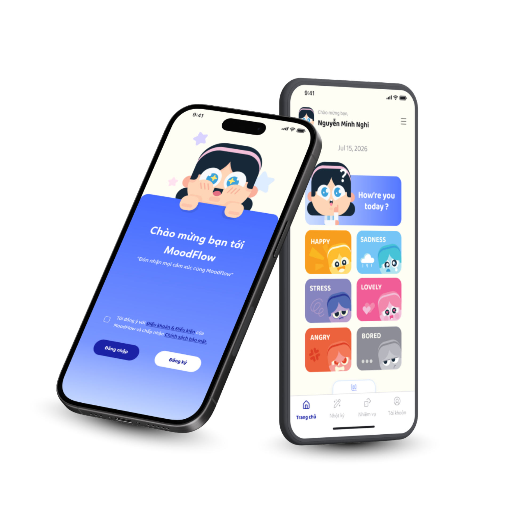

61.7%
Student Stress Level
Over 60% of surveyed students experience acute stress, with 25.1% reaching severe anxiety levels.
MoodFlow is a mental wellness companion designed for Gen Z and university students. It bridges the critical gap between passive, surface-level mood logs and clinical therapy by providing gentle AI root-cause reflection and micro-habits.

Over 60% of surveyed students experience acute stress, with 25.1% reaching severe anxiety levels.
1/5 teenagers encounter psychological barriers, but merely 8.4% have access to professional counseling.
Survey participants admitted default coping habits (binge-watching, passive scrolling) left them feeling stuck.
Daylio is a mood-tracking and journaling app that helps users record their emotions and daily activities, identify patterns over time, and gain insights into their mental well-being.

“Users do not lack advice, they lack a safe, reliable space to connect emotions and understand themselves.”
To uncover the unspoken realities of youth mental health and emotional awareness, we conducted qualitative one-on-one deep-dive sessions with university students. The study focused on dissecting personal coping mechanisms, daily stress triggers, and their barriers to using conventional wellness solutions.
Participants overwhelmingly revealed that while they frequently feel overwhelmed, they struggle to pinpoint the root causes of their burnout. Most rely on passive escapism (social media scrolling, binge-watching) which heightens guilt. They strongly expressed the need for gentle, non-judgmental guidance and self-talk tools over authoritative advice.
The survey results outline a concerning reality: Users are being overwhelmed by negative emotions, but only know how to rely on passive relief habits. However, the majority admit that these coping methods are completely ineffective, leaving them stuck in a stress loop.
Minh Nghi is an elite student with many good academic achievements and is always conscious of self-improvement from within. She always wants to understand herself deeper but doesn't know where to start.
• Ambitious, striving in studies and career.
• Hard to accept external counseling/advice.
• Phone (70%) and Laptop (30%).
• Surfing TikTok 2–3 hours/day, studying, and watching movies (Netflix, TikTok, ...).
• Prioritizes using entertainment apps.
• Wants to track personal health.
• Find the root causes leading to those emotions.
• Improve mental health, physical health.
• Find many solutions to help relieve stress.
• Cannot name her own emotions, frequently feels empty and aimless without knowing the reason why.
• Always encounters stress leading to negative actions.
• Always puts pressure on expectations of herself.
• Internet (Searching for the causes of problems).
• Facebook/Threads - Reading articles on mental problems.
• Mental health support apps - Supporting to find temporary solutions.
• TikTok/Netflix (Entertainment).
Allows users to securely create an account and sign in to access and personalize their MoodFlow experience.
Enables users to easily record their current mood and emotions, helping them recognize emotional patterns over time.
Gives users a private space to write about their thoughts, feelings, and daily experiences, creating a record for personal reflection and emotional insight.
Provides small, achievable self-care activities each day to encourage positive habits and help users maintain their emotional well-being.